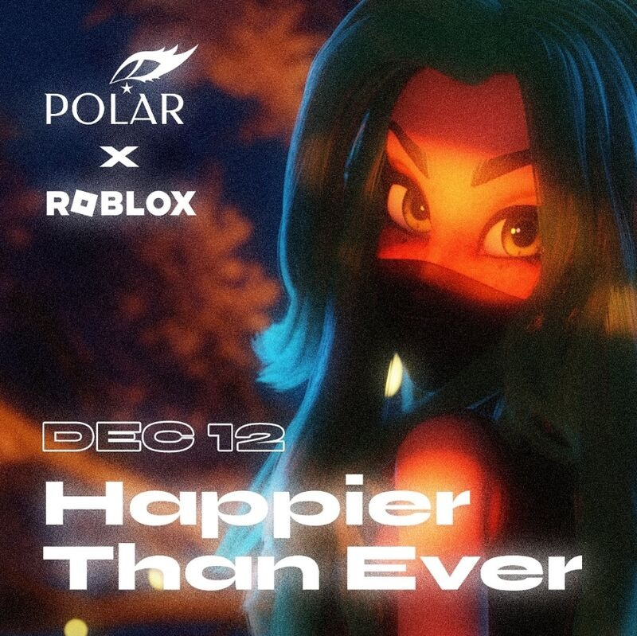
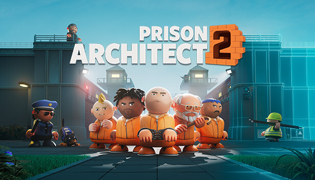
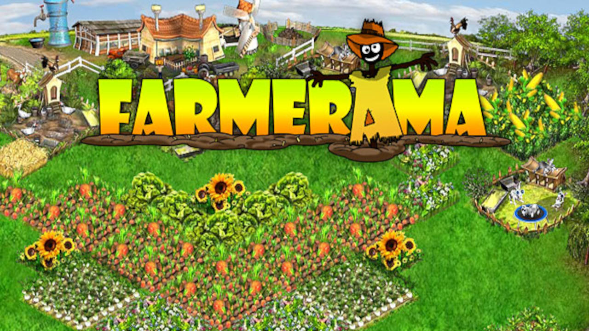
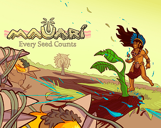

Edipo Andersen
Unity Software Engineer
Software Engineer with 6+ years of experience building gameplay systems, multiplayer features and live-operated games in Unity and Roblox for millions of players worldwide.
About Me
I'm a Software Engineer specialized in Unity, C# and gameplay programming, with professional experience building multiplayer systems, gameplay mechanics, optimization and live-service features.
During my career I have contributed to projects for Warner Bros., Netflix, Samsung and other international companies, delivering scalable gameplay systems, telemetry, backend integrations and production-ready features for games played by millions of users.
Experience
Kokku
Generalist Game Developer
May 2020 – February 2025Worked across Roblox and Unity projects developing gameplay systems, multiplayer features, NPC AI, progression systems, analytics, PlayFab integrations, optimization and live-service experiences.
GameJamPlus
Unity Gameplay Developer
2022 – 2023Developed the core gameplay systems for an award-winning puzzle game, implementing tile placement mechanics, level progression and the primary gameplay loop.
Manifesto Games
Game Developer
October 2018 – October 2019Developed 2D games using JavaScript and Cocos2D, implementing gameplay features, fixing bugs, validating releases and collaborating directly with clients.
Featured Professional Projects
Roblox Projects

Wonder Woman: Themyscira Experience
Warner Bros. • 61M+ VisitsDesigned and implemented gameplay systems including quests, inventory, collectibles, combat encounters, teleportation, progression systems and multiplayer minigames.

Stranger Things: Starcourt Mall
Netflix • 42M+ VisitsDeveloped matchmaking flows, NPC AI and telemetry pipelines. Redesigned the multiplayer flow, reducing player loss from approximately 70% to under 5%.

Samsung Space Tycoon
Samsung • 16M+ VisitsImplemented progression systems, rewards, quests, NPC behaviors, FTUE, PlayFab integrations and analytics instrumentation for a live-operated Roblox experience.

Icon / ClubBlox
Live Roblox ExperienceDeveloped social gameplay systems, music features, player interaction mechanics and live-service functionality. Implemented the DIY Music Experience and contributed to ongoing feature iteration and maintenance.
Unity Projects

Prison Architect 2
Unity • Automated TestingDeveloped automated test suites using the Unity Test Framework, validating critical gameplay flows including UI navigation, prison construction, gameplay startup and prisoner/staff management systems.

Farmerama
Unity • Live GameResolved Android-specific gameplay and platform integration issues, fixed persistence bugs affecting player-built structures and optimized inventory and asset loading, reducing loading times by approximately 90%.

Real Farm – Premium Edition
UnityRefactored legacy gameplay and loading systems to eliminate performance bottlenecks, improving startup time, runtime stability, memory usage and long-term maintainability.

Mauari: Every Seed Counts
🏆 Award-winning GameJamPlus ProjectImplemented the core gameplay loop, tile placement mechanics and puzzle-resolution systems that drive progression across the game. Developed during GameJamPlus and recognized among the competition's highlighted projects.
Other Projects

DigiWorld by Red Balloon
Educational GameContributed to the development of DigiWorld, an educational game created for Red Balloon. Worked on gameplay programming, feature implementation and project maintenance.
Skills
Game Development
Unity, Roblox Studio, Gameplay Systems, Multiplayer, AI, UI, Live Operations, Mobile Development.
Programming
C#, C++, Lua/Luau, JavaScript, Object-Oriented Programming, Design Patterns.
Backend & Services
PlayFab, Photon, REST APIs, Telemetry, Analytics, Client-Server Architecture.
Tools
Git, Unity, Visual Studio, VS Code, Android SDK, CI/CD.
AI Assisted Development
ChatGPT, Claude, Cursor, AI-assisted coding, code review, rapid prototyping.
Soft Skills
Teamwork, Technical Leadership, Problem Solving, Communication, Agile Development.